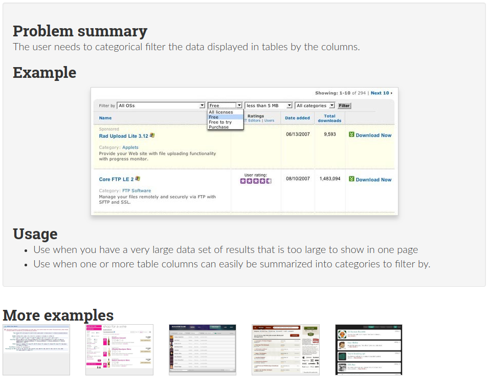
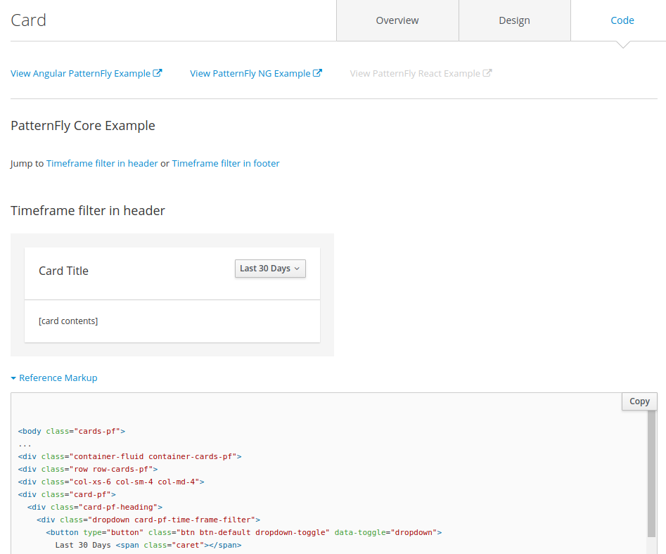
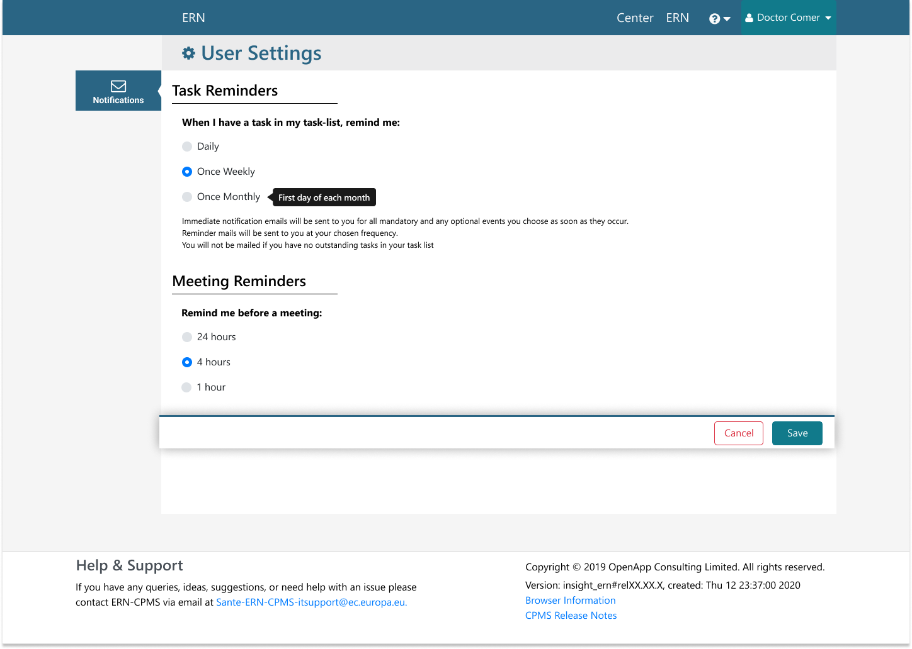
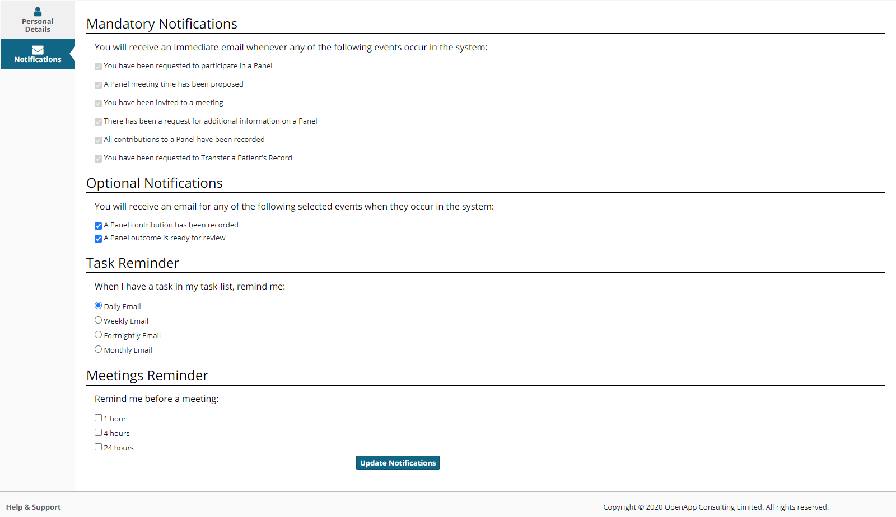
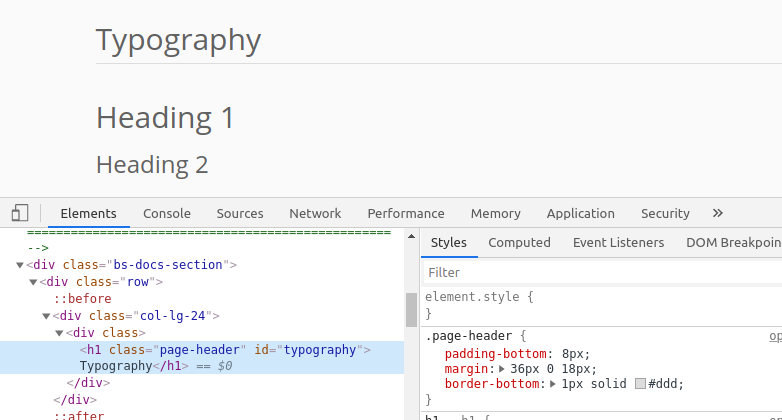
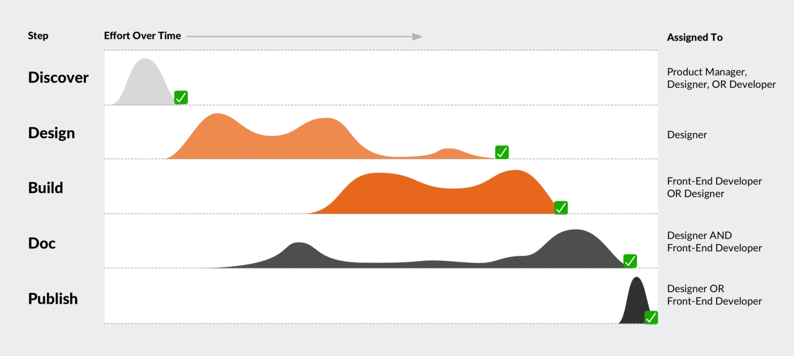
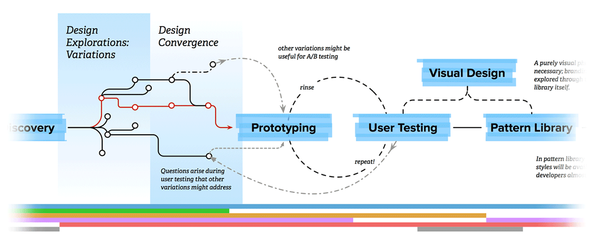

Aim of the Presentation
To answer the following questions;
What a Design System?
A Design System is the single source of truth which groups all the elements that will allow the teams to design, realize and develop a product.
Why is this useful?
There are a number of different areas needing needing designed and documented within any digital product. These include;
- Functional User Experience Patterns - the essence of which is behavioural
- Perceptual Patterns - iconography styles, colors and typography
- User Interface Components - tangible building blocks of the interface, such as a button, a header, a form element, a menu
UX Patterns Example
UX Patterns Requires
This must be at an abstract level;
- Problem stated
- Examples of Solution (images)
- Usage stated
Perceptual Pattern Example

Perceptual Pattern Requires
- Colours (HTML + CSS)
- Typography (HTML + CSS)
- Iconography (HTML + CSS)
Ideally this will be tethered to the main code base so the style in the documentation updates in real time with the development and cannot branch away from it through time
UI Component Example
UI Component Requires
- Overview
- Design (HTML + CSS)
- Code (HTML with Classes)
Again tethered to the main code base and able to act as a Sandbox for crafting Modular & Maintainable Components that will work in multiple instance in the system. Storybook can do this with a change of focus from managing Vue (Code) Components to documenting of UI Components (Code and Design)
Why a Design System?
The "things" being documented are very different in their nature and hence benefit from being documented in differing ways
- Functional User Experience Patterns - Behaviour
- Perceptual Patterns - Style
- User Interface Components - Code + Style
Why a Design System?
Without a coherent strategy for where each piece of documentation 'lives', it quickly becomes un-manageable - patchy, featuring duplication & requiring too much effort for proper engagement from other stakeholders
Is this really a problem?
Not if we are Post design, but we're not.
1 PO 'Sketches' for Requirements
But is potentially re-inventing the wheel, if its not obvious the wheel already exists. IE - there is no documented solution in at least a Styleguide or a Component in the Figma library.
2 Developer codes a Solution
2 Developer codes a Solution
But because there was no clear solution (wheel), develops their own in a Vue Component;
Introducing potential issues;
- Consistancy in Branding
- Consistancy in User Experiance
- Inefficiencies in time spent development & testing
- Documentation
3 Old Wheel already existed
4 New Wheel can't be documented
Because the style in a Vue Component, it can't be re-used without creating a copy (another source of truth).
And be can't documented as there is no way of tying the CSS to Docs
"The road to hell is paved with good intentions"
Potential Solution
Create a Design System
Design System Process
Design System Characteristic
- Input from more than one viewpoint
- Space for Diverge > Converge on Problem & Solution
- Creation of source of truth
- Documentation of the Solution
- Developer has Solution to use out of the box and can concentrate on other problems
How
- Build on top of the toolkit we already use (Bootstrap + our own bits), modifying and adding to as needed
- We don't need to break anything that is already working ok
- We don't need to forget and re-learn what is already understood reasonably well
- Refine and document legacy
- Add new documentation of Components/Patterns as these are developed
Where to start creating tangibles?
- Users glossary list - Google Doc. See .odt and .xmind (particularly doc-tree)
- Component Inventory list - including up to the size of Page - Google Doc
- Crystalize Pages identified above and make them the defaults out of the box on install
- Fuctionality Epics list - Google Doc
- Styleguide - in what?
Why an Openapp Toolkit?
Because we can address many of the previous issues in 1 go, including;
- Supporting Designers Protoyping
- Fast tracking work from Figma prototypes to working code
- CSS - Tokens are mirrored between Figma Comnponents & SCSS Variables
- Clean out the technical debt plaguing our current approach
- Document design so system is maintainable
To support the Big Picture
Project roadmap
- Identify generic Pattern areas, and list of functional stories within these, referencing UX Pattern libraries as we go - create an document, ...
- UX - Create the Figma Components to support these where BS doesn't supply them
- UI - Create BootstrapVue Components where the above don't already exist
- API Work so the Toolkit interfaces with the backend
- Internal - Sprint to tie it all together as a generic functioning system and do some aesthetic work so it doesn't look 'under designed'
- External - Repeat process again, this time at a more specific level to include what might only relate to each customer project
Saas project roadmap
- Repeat process again, this time at a more specific level to include what might only relate to SaaS Registry
Resources
- Design Systems (purchased pdf) - Alla Kholmatova
- The 2018 DSM Field Guide - Invision - Download?
- dsm-field-guide